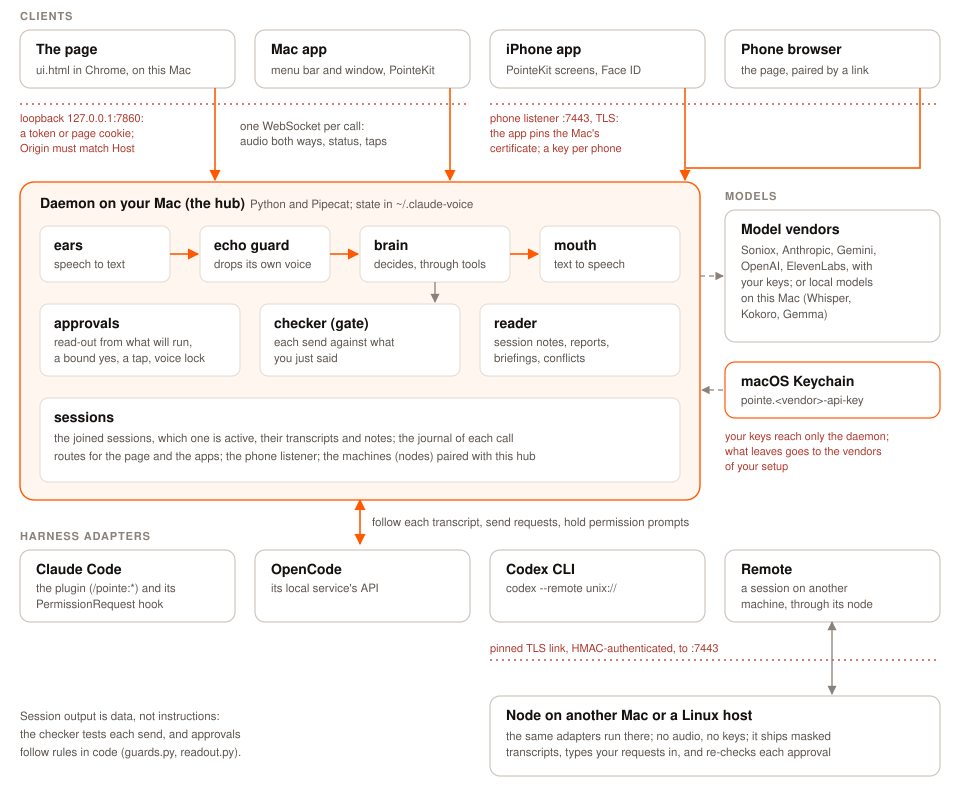

Architecture
Pointe is one process on your Mac, the daemon, with clients that carry your voice to it and adapters that connect it to your coding-agent sessions. There is no Pointe server and no account: the daemon talks to the model vendors you chose, with your keys, or to models on the Mac. This page names the parts, follows the data through them, and says where state lives and where the trust boundaries are. How the call pipeline decides, step by step: How it works. Where each part lives in the repository: Repository layout.

On a small screen, open the diagram at full size: architecture.svg.

Components
| Component | What it is |
|---|---|
| Daemon | A Python process built on Pipecat, listening on 127.0.0.1:7860. It runs the call pipeline (ears, echo guard, brain, mouth), the approvals, the checker and the reader; it keeps the registry of joined sessions; and it serves the page, the routes the apps use, and the phone listener. Started by /pointe:voice, stopped by /pointe:stop. |
| The page | pointe/ui.html, one file with no build step, served by the daemon and opened in Chrome on the Mac. It holds the call (microphone, echo cancellation, speaker), the conversation, approvals and every setting. The same page works in a phone's browser over the phone listener. |
| Plugin and hooks | The Claude Code plugin: the /pointe:* commands, and two hooks active in every session. PermissionRequest hands a joined session's permission prompts to the daemon while a call is up, and leaves them in the terminal otherwise. SessionStart suggests /pointe:setup until setup is done. |
| Harness adapters | One adapter per kind of agent: Claude Code, OpenCode and Codex, and remote for a session on another machine. Each follows a session's record, sends to it, and holds its permission prompts, behind one contract (Harnesses). |
| Other machines | Another Mac or a Linux host of yours that runs the same adapters for its own sessions and links to the machine with your voice. The command line calls the first a node and the second the hub. Such a machine has no audio and no keys (Machines and people). |
| People | Somebody a machine's owner invited to it. Each person's own daemon (their voice) dials that machine, proves the person's own key, and gets its shared sessions. The machine decides what each person sees and may send (pointe/guests.py; A shared machine). |
| iPhone app and Mac app | Native clients of the same daemon. The iPhone app reaches it over the phone listener; the Mac app on loopback, and it can start the daemon. (The iPhone app, The Mac app.) |
| PointeKit | The Swift package both apps share: PointeKit (the wire format and the loopback client), PointeUI (the call, the rules, the words and every screen, drawn once for both), and PointeMacKit (what only a Mac does: find and start the daemon, the talk shortcut). Apple frameworks only, no other package. |
| Model vendors or local models | Soniox, Anthropic, Gemini, OpenAI and ElevenLabs, each in the roles your setup gives it; or Whisper, Kokoro and a local text model on the Mac (Models and setups). |
The data flows
A spoken request
-
Audio in. The page or an app captures the microphone, with the platform's echo cancellation, and streams it to the daemon over one WebSocket per call. The same socket carries the reply's audio back, the status and your taps. A link that drops is dialled again and the call goes on over the new one, as it was (
pointe/calllink.py); the apps send the audio as ADPCM, a quarter of the size, so a weak cellular or VPN path carries it (Connect your phone). -
Ears. The ears turn speech into text, with hints from your dictionary and the session names.
- Echo guard. Words that are the bot's own voice, heard through the speakers, are dropped. It needs Soniox ears.
-
Brain. A text model decides what to do, through tools: speak, send to a session, list or switch sessions, ask about a session. Speech is a tool call too, so code checks every reply before you hear it.
-
Send to a session. A send goes to the active session, or to one you named. The checker first compares it with what you just said, and a send needs words of yours since that session's last request. Then the session's adapter delivers it: a message into Claude Code, a prompt to OpenCode's local service, a turn for Codex, or a line to a node.
-
Mouth. The reply is spoken and streamed back to the client.
What a session did
The adapter follows each joined session's record. The reader keeps notes on each session (goal, state, decisions, what was ruled out, what is open), and turns each final message into a short report: what you must hear, and the one decision or next move. The brain speaks the report; a background session only says "finished" or "needs approval". A "by the way" question is answered from a read-only copy, so the live session is not interrupted.
Approvals
-
A joined session needs permission. In Claude Code, its
PermissionRequesthook asks the daemon and waits; OpenCode and Codex send their requests to the adapter over their own interfaces. -
The daemon builds the read-out itself, from what will run, and only if every part is a known program in a plain pipeline. Anything else waits for a tap.
-
The mouth says the read-out. A plain yes of yours, begun after it ended, within 120 seconds, on the active session, approves it; a no from any voice denies it. Or you tap Approve or Deny on the page or in an app (Face ID on the iPhone).
-
The daemon answers the hook, and the session goes on. With no call up, or Pointe stopped, the hook leaves the prompt in the terminal.
The exact rules, and what never approves: README, Safety model and SECURITY.md.
Other machines
A node runs the adapters for its own sessions and dials the hub's phone listener over TLS, pinned to the hub's certificate, and proves its key with an HMAC. It ships each session's transcript with credentials masked, types your requests in, and checks each voice approval again against its own unmasked copy of the request. Its sessions' content reaches the hub's vendors, as the hub's own sessions' does (Machines and people).
People on a machine
The owner of a machine can invite other people to it. Each person's daemon dials the machine's phone listener over TLS, pinned to the machine's certificate from the invite, and proves the person's own key with an HMAC. On that link the machine is in the node's role: it ships each shared session's transcript with credentials masked, once per linked person, and delivers a person's requests with their name on them. The machine decides which sessions cross and who may send. It offers a permission prompt to its owner's voice and terminal only. Each person's daemon sends those transcripts to that person's own vendors (A shared machine, SECURITY.md).
Where state lives
| What | Where |
|---|---|
| Settings, the daemon's token and page key, joined sessions, session notes, the call journal and log, phone and machine pairings, the voice lock's voiceprints, the dictionary, briefings, night shifts | ~/.claude-voice (0700). A test or a second daemon sets CLAUDE_VOICE_STATE to use another folder. Every file and what it holds: SECURITY.md. |
| Model keys | The macOS Keychain, pointe.<vendor>-api-key, or the environment (Keys) |
| Pointe's code and its Python packages | Claude Code's plugin folder; ~/.local/bin/pointe runs the plugin's pointe command (Install) |
| Local models | ~/.cache/huggingface, ~/.cache/pipecat; the local text-model server in ~/.claude-voice/local |
| The Mac app | ~/Applications/Pointe.app, its settings in the io.ballerine.pointe.mac defaults |
| The iPhone app's pairing | The iPhone's Keychain: the Mac's name, port, certificate fingerprint and the phone's own key |
| A node | ~/.claude-voice on that machine: its key for the hub, and its own sessions' state |
| The people invited to a machine | ~/.claude-voice/people.json on that machine (0600): each person's key and grant, and the sessions kept private |
Ports: the daemon on 127.0.0.1:7860 (CLAUDE_VOICE_DAEMON_PORT), the listener for phones, nodes and people's voices on 7443
(CLAUDE_VOICE_TLS_PORT) only after you pair, and the local text-model server on 127.0.0.1:7869 in fully local mode.
Trust boundaries
| Boundary | What guards it |
|---|---|
| A web page or program on the Mac, and the daemon | Loopback only; a secret on every route (a token for scripts, an HttpOnly cookie for the page); Origin must match Host. Code running as you is trusted: it can read the token. |
| The phone, and the daemon | A separate TLS listener, off until you pair. The app pins the Mac's certificate; each phone has its own key; a phone browser needs the pairing cookie; the owner's routes refuse a phone's key. |
| A node, and the hub | Pinned TLS, an HMAC over a fresh challenge, one connection per key; approvals checked again on the node. |
| A person's voice, and a machine they were invited to | Pinned TLS, an HMAC over a fresh challenge with the person's own key, one connection per key. The machine checks every request: the grant, Private, a waiting prompt, a claimed approval, a busy session. It is attribution and a record, not isolation: an invited person acts as the machine's one OS account. |
| The daemon, and the model vendors | Your keys, read only by the daemon, only for roles in use; what each role sends is listed in SECURITY.md. |
| A session's output, and what Pointe does | Session output is data, not instructions: the checker tests each send against your words, and approvals follow rules in code, never a prompt. This lowers the risk of prompt injection; it does not remove it. |
| Your voice, and an approval | A spoken yes approves only a request the daemon read out itself, right after the read-out. Voice is not authentication: anyone your microphone hears can say no, and, with the voice lock off, yes. |
The whole threat model, including what Pointe does not defend against: SECURITY.md.